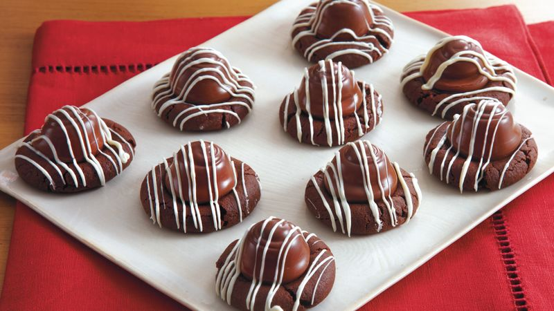

Chocolate Covered Cherry Cookies

These cookies are my families most favorite. every year for christmas they ask me to make them.
So,I figured I could share the recipie here!
- 1 1/2 cups all-purpose flour
- 1/2 cup unsweetened coca powder
- 1/2 cup butter or margerine,softened
- 1 cup sugar
- 1/4 teaspoon salt
- 1/4 teaspoon baking powder
- 1/4 teaspoon baking soda
- 1 egg
- 1 1/2 teaspoon vanilla
- 48 undrained marachino cherries
- 1 6oz semisweet Chocolate pieces
- 1/2 cup sweetened milk
Baking Instructions
- In a mixing bowl combine flour and cocoa; set aside. In a large mixing bowl beat the butter or margarine with an electric mixer on medium to high speed about 30 seconds or until softened. Add sugar, salt, baking powder, and baking soda. Beat until well combined. Add egg and vanilla. Beat well. Gradually beat in the flour mixture.
- Shape dough into 1-inch balls; place on ungreased baking sheet. Press down center of each ball with thumb. Drain maraschino cherries, reserving juice. Place a cherry in the center of each cookie.
- In a small saucepan combine the chocolate pieces and sweetened condensed milk; heat until chocolate is melted. Stir in 4 teaspoons of the reserved cherry juice.Spoon about 1 teaspoon of the frosting over each cherry on unbaked cookie, spreading to cover cherry. (Frosting may be thinned with additional cherry juice, if necessary.)
- Bake in 350°F oven about 10 minutes or until done. Remove to wire rack; cool. Cover and store at room temperature up to 2 days. Makes 48 cookies.